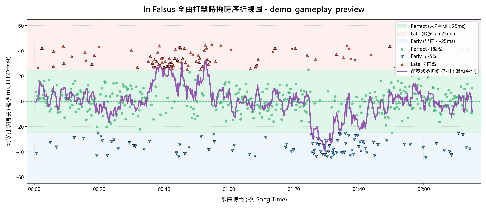

| 軌道 (Lane) | 總音符數 | Perfect (大P) | Early (早按) | Late (晚按) | 大P達成率 |
|---|---|---|---|---|---|
| 1 (Shift) | 34 | 21 | 9 | 4 | 61.8% |
| 2 (Key A) | 108 | 62 | 28 | 18 | 57.4% |
| 3 (Key S) | 131 | 92 | 18 | 21 | 70.2% |
| 4 (Key ;) | 118 | 78 | 18 | 22 | 66.1% |
| 5 (Key L) | 120 | 87 | 14 | 19 | 72.5% |
| 6 (Space) | 92 | 59 | 16 | 17 | 64.1% |
| 空中滑軌 (Slide) | 0 | 0 | 0 | 0 | - |